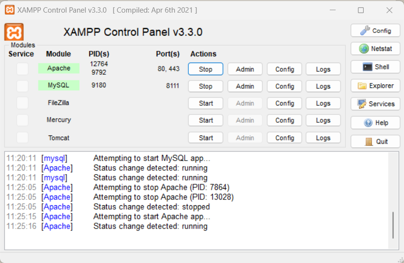
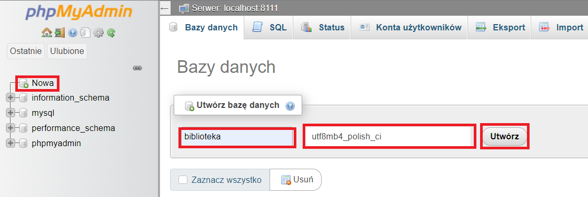

Tworzenie, usuwanie i modyfikowanie struktury tabeli
Uruchom program XAMPP, a w nim dwa moduły "Apache" oraz "MySQL".

Przejdź do phpMyAdmin
Utwórz nową bazę danych "biblioteka"

Lub za pomocą SQL:
CREATE DATABASE
biblioteka CHARACTER SET
utf8 COLLATE
utf8_polish_ci;
CREATE DATABASE
biblioteka
CHARACTER SET
utf8
COLLATE
utf8_polish_ci
Tworzenie tabeli Mieszkańcy
Struktura:
identyfikator jako int (liczba całkowita) z opcją "Auto increment" aby atrybuty samoistnie się numerowały.
imie jako tekst (nazwij krotkę bez stosowania znaków diakretycznych np.: ąęćśźż).
nazwisko jako tekst (nazwij krotkę bez stosowania znaków diakretycznych np.: ąęćśźż).
identyfikator_adresu jako int (liczba całkowita)
CREATE TABLE
biblioteka.mieszkancy
(identyfikator INT
NOT
NULL
AUTO_INCREMENT
, imie TEXT
NOT
NULL
, nazwisko TEXT
NOT
NULL
, identyfikator_adresu INT
NOT
NULL
, PRIMARY KEY
(identyfikator));
CREATE TABLE
biblioteka.mieszkancy
identyfikator INT
NOT
NULL
AUTO_INCREMENT
- W nawiasie deklarujemy krotki. Nazwa, typ, czy moze byc NULL oraz uzyamy słowa kluczowego do inkrementacji
(AUTO_INCREMENT=100 rozpocznie numerowanie od 100).
PRIMARY KEY
(identyfikator)
Przyjezdni maja dokladnie taką samą strukturę.
Spróbuj stworzy tabelę Przyjezdni oraz Adresy wzorując się na przykładzie powyżej.
Struktura tabeli Adresy jest poniżej.
Nie przepisuj postaraj się zapisać całe zapytanie.
Tworzenie tabeli Adresy
Struktura:
identyfikator jako int (liczba całkowita) z opcją "Auto increment" aby atrybuty samoistnie się numerowały.
ulica jako tekst (nazwij krotkę bez stosowania znaków diakretycznych np.: ąęćśźż).
nr_domu jako int (liczba całkowita)
miejscowosc jako tekst (nazwij krotkę bez stosowania znaków diakretycznych np.: ąęćśźż).
Modyfikacja krotek istniejącej tabeli
Przez pomyłkę w tabeli Adresy przez pomyłkę dopisałem do nazwy krotki nr_domu literę "s".
ALTER TABLE
biblioteka.adresy
CHANGE
nr_domus nr_domu INT
NOT
NULL
;
ALTER TABLE
biblioteka.adresy
CHANGE
nr_domus nr_domu INT
NOT
NULL
Dodawanie krotek do istniejącej tabeli
ALTER TABLE
biblioteka.adresy
ADD
kraj TEXT
NOT
NULL
;
ALTER TABLE
biblioteka.adresy
ADD
kraj TEXT
NOT
NULL
Usuwanie krotek z istniejącej tabeli
ALTER TABLE
biblioteka.adresy
DROP COLUMN
kraj;
ALTER TABLE
biblioteka.adresy
DROP COLUMN
kraj